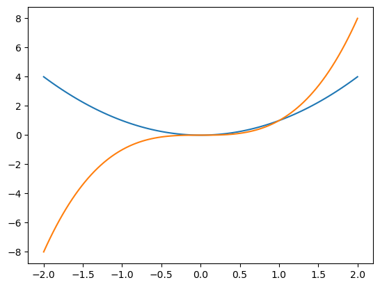
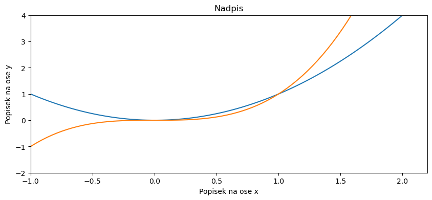
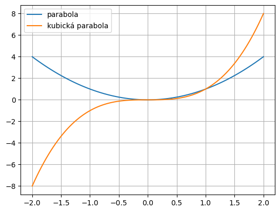
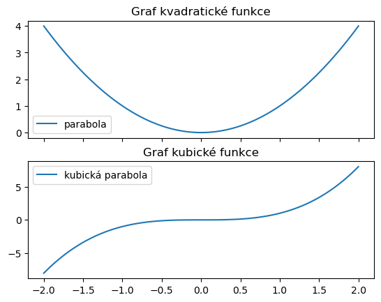
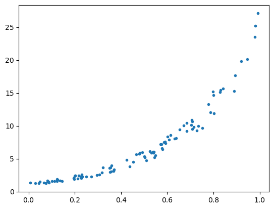
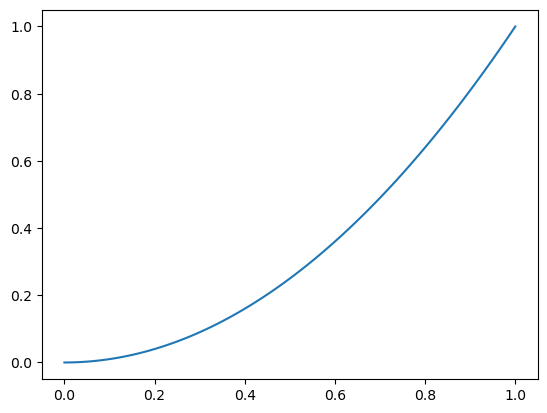
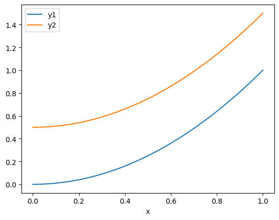

Obrázky, grafy
Obrázky, grafy#
import matplotlib.pyplot as plt
import numpy as np
import pandas as pd
x = np.linspace(-2,2,100)
y = x**2
z = x**3
plt.plot(x,y)
plt.plot(x,z)
[<matplotlib.lines.Line2D at 0x7f16a0cf6350>]

fig, ax = plt.subplots(1, figsize = (10,4))
ax.plot(x,y)
ax.plot(x,z)
ax.set(
title="Nadpis",
xlabel="Popisek na ose x",
ylabel="Popisek na ose y",
xlim = (-1,None),
ylim = (-2,4)
)
[Text(0.5, 1.0, 'Nadpis'),
Text(0.5, 0, 'Popisek na ose x'),
Text(0, 0.5, 'Popisek na ose y'),
(-1.0, 2.2),
(-2.0, 4.0)]

plt.plot(x,y,label="parabola")
plt.plot(x,z,label="kubická parabola")
plt.legend()
plt.grid()

fig,ax = plt.subplots(2,1,sharex=True)
ax[0].plot(x,y,label="parabola")
ax[1].plot(x,z,label="kubická parabola")
for i,j in zip(ax,["kvadratické","kubické"]):
i.legend()
i.set(title="Graf "+j+" funkce")

pocet = 100
x = np.random.random(pocet)
sum = np.random.random(pocet)
y = np.exp(3*x)*(1+0.4*sum)
fig, ax = plt.subplots(1)
plt.plot(x,y,".")
#ax.set(yscale="log")
[<matplotlib.lines.Line2D at 0x7f16a00ce7a0>]

x = np.linspace(0,1,100)
y = x**2
fig,ax = plt.subplots(1)
ax.plot(x,y)
# ax.set(
# xlim=(None,None),
# ylim=(-1,None),
# title="Můj graf",
# xlabel="osa x",
# ylabel="osa y",
# )
# plt.grid()
[<matplotlib.lines.Line2D at 0x7f16a0141510>]

x = np.linspace(0,1,100)
df = pd.DataFrame()
df["x"] = x
df["y1"] = x**2
df["y2"] = x**2+.5
fig,ax = plt.subplots(1)
df.plot(x="x", ax=ax)
# ax.set(
# xlim=(None,None),
# ylim=(-1,None),
# title="Můj graf",
# xlabel="osa x",
# ylabel="osa y",
# )
# plt.grid()
<AxesSubplot:xlabel='x'>
